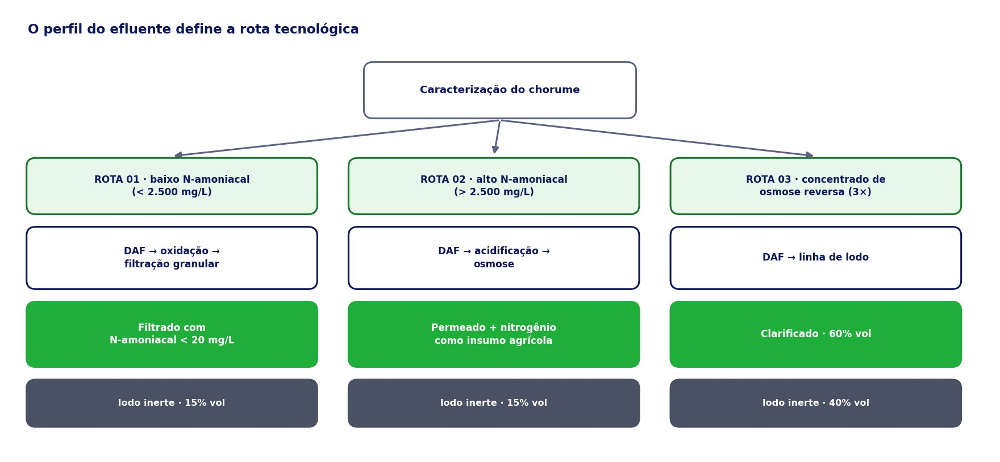
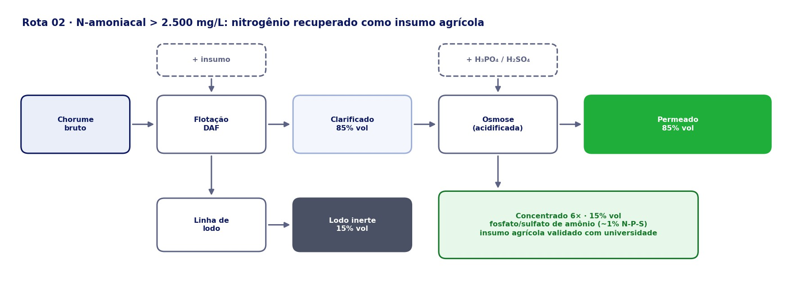
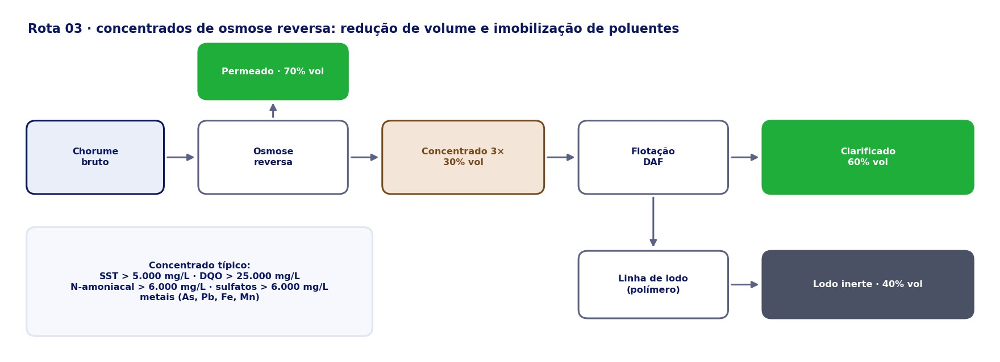
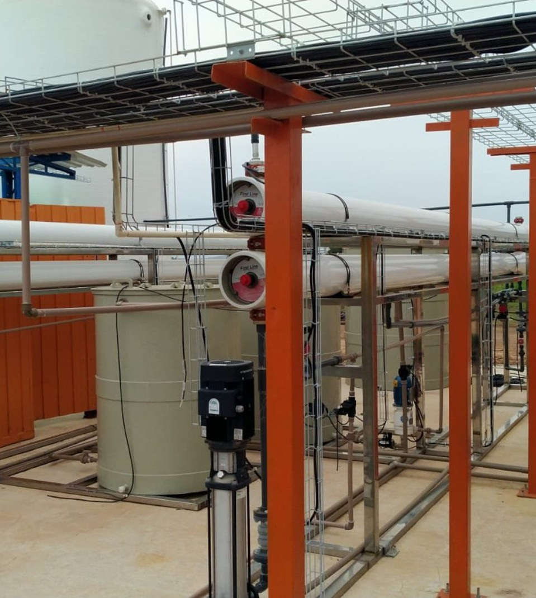
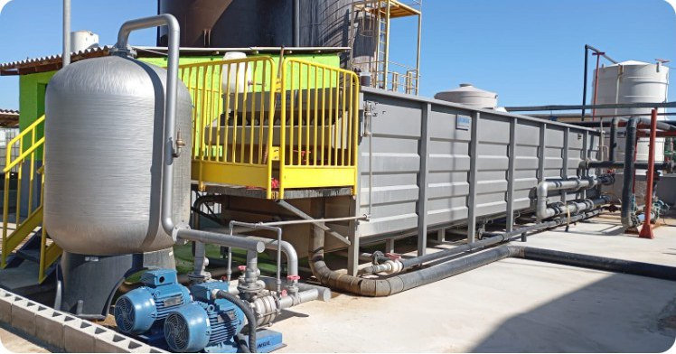

Problema / desafio do cliente
O chorume de aterros sanitários é um dos efluentes mais difíceis de tratar: alta carga orgânica recalcitrante, nitrogênio amoniacal elevado, sólidos, sulfatos e metais, com composição que muda de aterro para aterro e ao longo da vida de cada aterro. Soluções únicas costumam falhar, e as plantas com osmose reversa ainda geram concentrados que não têm destino adequado.
O objetivo foi desenvolver uma tecnologia própria que transforme o chorume em água tratada, insumo agrícola e resíduo inerte, escolhendo a rota pelo perfil de cada efluente.
Contexto e características do processo
- Tecnologia desenvolvida pela GETA a partir de anos de operação e supervisão de estações de tratamento de chorume.
- Protegida por pedido de patente de invenção BR 10 2026 020875 2, depositado no INPI.
- Comprovada em escala industrial em uma planta de 1.000 m³/dia em operação na Região Metropolitana de Curitiba (PR).
- A rota agrícola foi validada em parceria com a Universidade Federal Rural do Rio de Janeiro (UFRRJ).
Diagnóstico e dados analisados
- O nitrogênio amoniacal é o parâmetro que mais define a rota: abaixo de cerca de 2.500 mg/L ele pode ser removido no próprio tratamento; acima disso, vale mais recuperá-lo como produto.
- Os concentrados de osmose reversa chegam a mais de 5.000 mg/L de sólidos suspensos, 25.000 mg/L de DQO, 6.000 mg/L de N-amoniacal e 6.000 mg/L de sulfatos, além de metais como As, Pb, Fe e Mn.
- O lodo gerado no tratamento precisa ser inerte, para disposição segura e sem risco de lixiviação.
Metodologia utilizada
- Caracterização do chorume: N-amoniacal, sólidos, matéria orgânica, sulfatos e metais.
- Definição da rota entre as três opções e ensaio de tratabilidade com o efluente do cliente.
- Proposta: dimensionamento, balanço de massa, destino de cada saída e cronograma de implantação.

Solução de engenharia desenvolvida
Rota 01 · N-amoniacal abaixo de 2.500 mg/L: flotação por ar dissolvido (DAF), oxidação e filtração granular. O clarificado (85% do volume, turbidez < 10 NTU) é filtrado até N-amoniacal < 20 mg/L, atendendo à CONAMA 430/2011.

Rota 02 · N-amoniacal acima de 2.500 mg/L: DAF, acidificação e osmose. O permeado (85% do volume) segue para descarte ou reúso, e o concentrado (6×, 15% do volume) vira fosfato/sulfato de amônio, um insumo agrícola com cerca de 1% de N-P-S.

Rota 03 · concentrados de osmose reversa: o concentrado (3×, 30% do volume) passa por DAF e linha de lodo com polímero, gerando 60% de clarificado e 40% de lodo inerte que retém sólidos, matéria orgânica, sulfatos e metais.

Tecnologias e processos envolvidos
- Flotação por ar dissolvido (DAF) com insumos específicos.
- Oxidação e filtração granular para remoção de nitrogênio amoniacal.
- Osmose com acidificação (H₃PO₄ / H₂SO₄) para fixar o nitrogênio como sal de amônio.
- Linha de lodo com polímero, gerando lodo hidrofóbico e inerte, que não lixivia.

Modelagem, simulação e ferramentas computacionais
Modelos, simulações e ferramentas usados (balanços, CFD, Python, MATLAB, redes neurais, DMD, dashboards…) e o que cada um permitiu avaliar ou decidir.
Resultados obtidos
- Água tratada: filtrado com N-amoniacal < 20 mg/L (Rota 01) ou permeado de osmose (Rota 02).
- Nitrogênio valorizado como insumo agrícola, validado com a UFRRJ (Rota 02).
- Redução de volume dos concentrados de osmose e imobilização dos poluentes em lodo inerte (Rota 03).
- Lodo inerte, hidrofóbico e sem lixiviação, para disposição segura.
- Tecnologia com pedido de patente depositado e escala industrial comprovada (1.000 m³/dia).

CAPEX/OPEX e análise técnico-econômica
Quando aplicável: estimativas de CAPEX e OPEX, comparação entre alternativas, custo por m³ ou por tonelada, payback.
Escopo e responsabilidades da GETA
A GETA é responsável por:
- desenvolvimento e proteção da tecnologia;
- caracterização do chorume e ensaios de tratabilidade;
- definição da rota e projeto da planta;
- acompanhamento da implantação e supervisão técnica da operação.
Principais entregáveis
- Caracterização do chorume e ensaio de tratabilidade.
- Definição da rota tecnológica.
- Dimensionamento, balanço de massa e destino de cada saída.
- Cronograma de implantação e supervisão técnica.
Galeria
